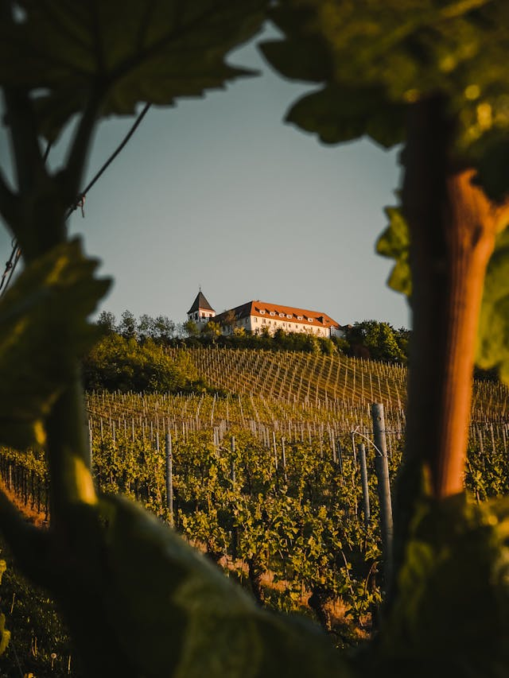
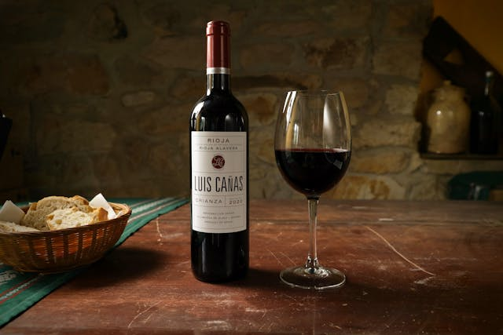
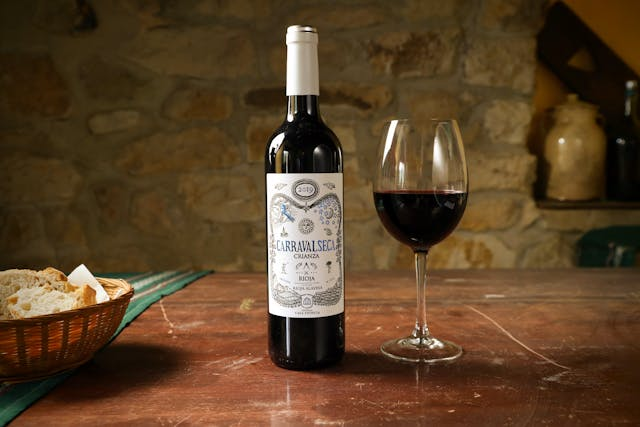
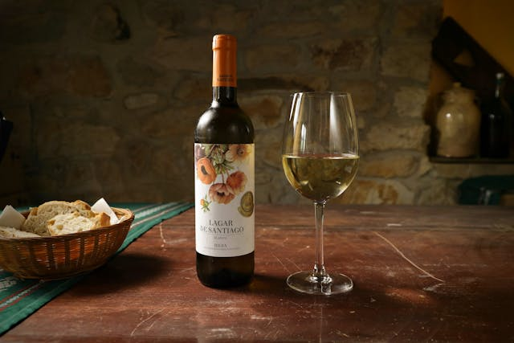

Na blagim padinama našeg imanja prostiru se vinogradi
koji iz godine u godinu daju grožđe vrhunskog kvaliteta.
Pažljivo biramo položaje čokota, oslanjajući se na
idealan odnos sunca, vetra i plodnog zemljišta,
kako bismo svakom zrnu omogućili da dostigne
punu zrelost i bogatstvo aroma.
U vinogradu negujemo spoj tradicije i savremenih metoda uzgoja.
Ručna berba i stroga selekcija grozdova garantuju
da u podrum stiže samo najbolje – zdravo, zrelo
i aromatično grožđe.


Tamjanika – Selektovana berba
Vino duboke crvene boje, bogatog i punog ukusa.
U njemu se prepliću note zrelog voća i blage začinske nijanse.
Prijatno i skladno, idealno uz crveno meso i zrele sireve.

Caraval Reserva – Specijalna selekcija
Izraženog mirisa i bogatog ukusa, sa notama tamnog voća i blagom toplinom. Elegantno i uravnoteženo vino koje se dugo pamti, savršeno za posebne trenutke.

Grand Reserva – Sveža berba
Svetle zlatne boje, osvežavajućeg i voćnog mirisa.
Lagano, prijatno i pitko vino.
Idealno uz ribu, lagana jela i opuštene letnje večeri.